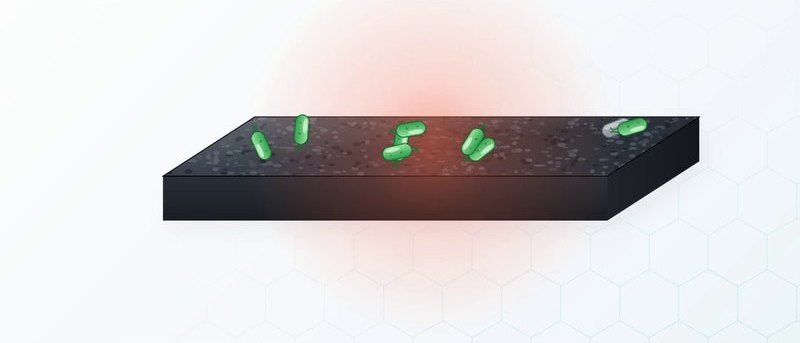
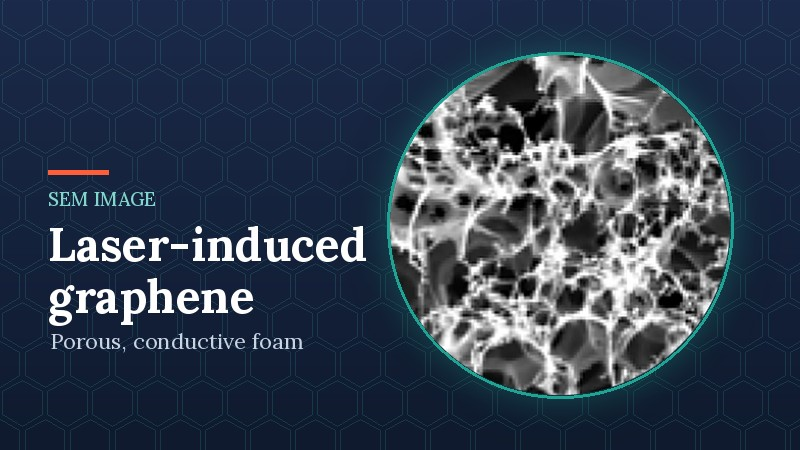
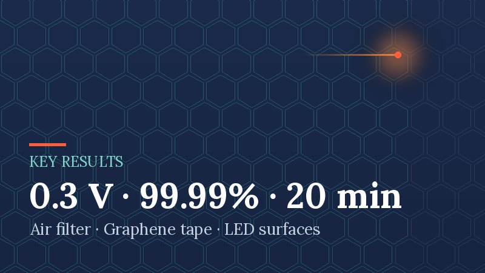
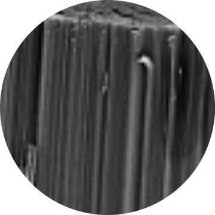
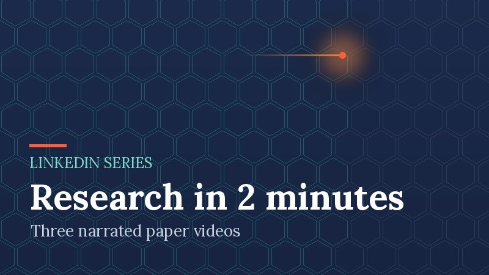
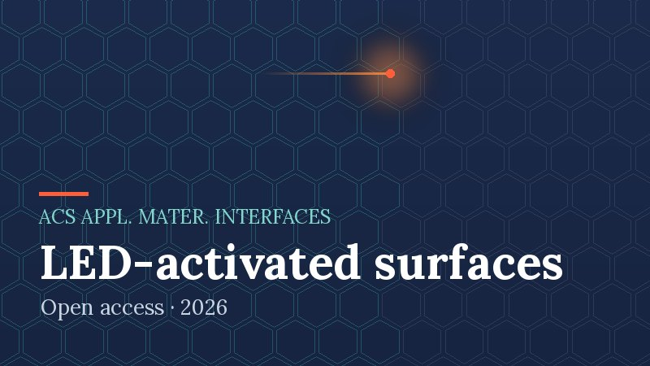
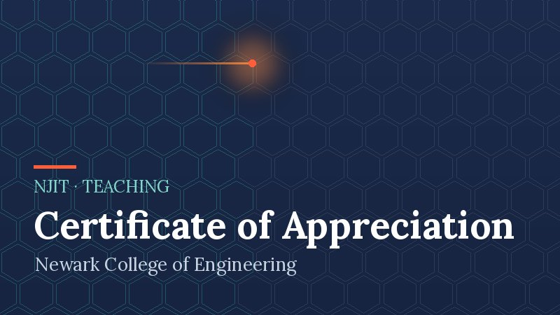
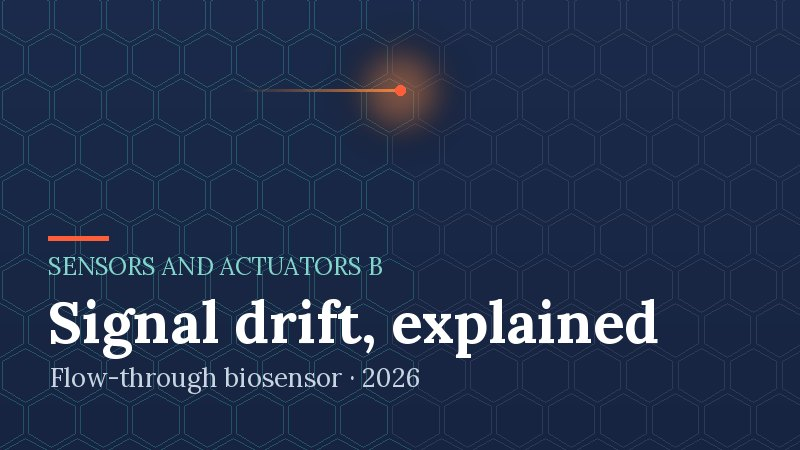
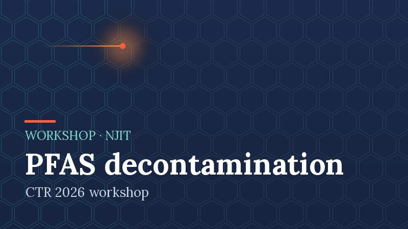
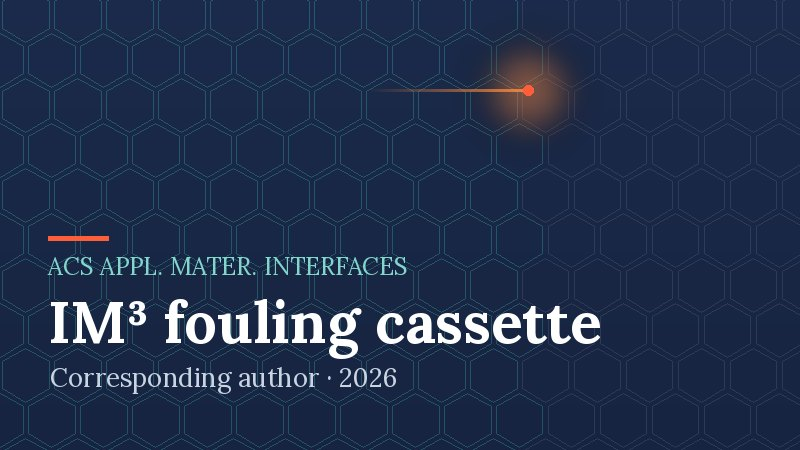

LITE Laboratory
Laser-Induced Transformations for Environment & Health

LITE Laboratory
Laser-Induced Transformations for Environment & Health
We use a laser to turn ordinary polymers into conductive, porous graphene in a single step, then build antimicrobial surfaces, water and air filters, and electrochemical sensors from it. The aim is cleaner water, cleaner air and better public health.
Follow the links below to learn more about the research, the publications and the people behind it.
Research

Antimicrobial & Antiviral Surfaces
Graphene surfaces that inactivate bacteria and viruses using low voltage, light, or both, from air filters to adhesive tapes.
Membranes & Filters
Laser-induced graphene composite membranes and filter media for water treatment, air purification and fouling control.

Sensing & Monitoring
Impedimetric microfluidic sensors and freestanding graphene resonators that watch membranes and detect viruses.
Explore

Key Results
0.3 V air filters, a 99.99% sterilizing tape and LED-activated carbon surfaces, each with its source paper.

Methods & Capabilities
Laser processing, materials characterization, electrochemistry and microfluidic automation used across the work.
Collaborate
Questions about the research, collaboration ideas and media requests are welcome by email.
News

“Research in 2 minutes” video series launched
Short narrated videos, one per paper, now appear on the LITE Laboratory LinkedIn page. The first three cover the air filter, the graphene tape and the LED-activated surfaces.

LED light switches on antibacterial carbon surfaces
Plasma-treated carbon nanofiber surfaces killed 99.1% of bacteria after 20 minutes under a 23 W LED bulb. ACS Applied Materials & Interfaces, open access.

Certificate of Appreciation, Newark College of Engineering
Recognition for designing and teaching the NJIT Pre-Engineering Bridge Course in Summer 2026.

Tracing signal drift in flow-through biosensors
A study of what causes impedance drift in a porous 3D flow-through microelectrochemical sensor. Sensors and Actuators B: Chemical.

CTR workshop on PFAS decontamination, NJIT
Took part in the CTR 2026 Workshop on Translational Research and Technology Innovations for PFAS Decontamination.

A membrane-mimic cassette that watches fouling in real time
The IM³ cassette uses interdigitated electrodes to track fouling at membrane interfaces. Corresponding author, ACS Applied Materials & Interfaces.